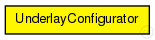
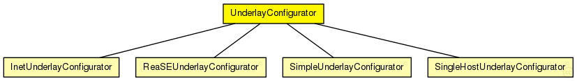

This documentation is released under the Creative Commons license
This documentation is released under the Creative Commons licenseUnderlayConfigurator base module
The following diagram shows usage relationships between types. Unresolved types are missing from the diagram. Click here to see the full picture.
The following diagram shows inheritance relationships for this type. Unresolved types are missing from the diagram. Click here to see the full picture.
| InetUnderlayConfigurator (simple module) |
Configurator of the IPv4Underlay |
| ReaSEUnderlayConfigurator (simple module) |
Configurator of the ReaSEUnderlay |
| SimpleUnderlayConfigurator (simple module) |
Configurator of the SimpleUnderlay |
| SingleHostUnderlayConfigurator (simple module) |
Configurator of the SingleHostUnderlay |
| Name | Type | Default value | Description |
|---|---|---|---|
| terminalTypes | string |
list of terminal types |
|
| churnGeneratorTypes | string |
a list of churn generators to be used |
|
| transitionTime | double |
time to wait before measuring after init phase is finished |
|
| measurementTime | double |
duration of the simulation after init and transition phase |
|
| gracefulLeaveDelay | double |
time between prekill and removal from overlay |
|
| gracefulLeaveProbability | double |
probability of gracefull leave |
| Name | Value | Description |
|---|---|---|
| display | i=block/cogwheel |
// // UnderlayConfigurator base module // simple UnderlayConfigurator { parameters: string terminalTypes; // list of terminal types string churnGeneratorTypes; // a list of churn generators to be used double transitionTime @unit(s); // time to wait before measuring after init phase is finished double measurementTime @unit(s); // duration of the simulation after init and transition phase double gracefulLeaveDelay @unit(s); // time between prekill and removal from overlay double gracefulLeaveProbability; // probability of gracefull leave @display("i=block/cogwheel"); }
This documentation is released under the Creative Commons license